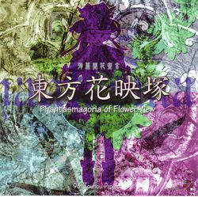

- Welcome to Touhou Wiki!
- Please register to edit. For assistance, check in with our Discord server or IRC channel.
Phantasmagoria of Flower View
Phantasmagoria of Flower View | |
|---|---|
|
 | |
| Developer | |
| Publisher | |
| Released |
Trial+: May 4, 2005 |
| Genre |
Competitive Vertical Danmaku Shooting Game |
| Gameplay |
Single-player Story Mode, Human vs. Human Match (Shared screen, LAN, Online), Human vs. Computer AI Match, Computer AI vs. Computer AI Match |
| Platforms | |
| Requirements |
|
Touhou
Gameplay[edit]
This game is a split-screen vertical danmaku shooting game where two characters engage in the normal Touhou-esque gameplay, while unleashing attacks and character-specific spell cards onto the other player, similar to that of Phantasmagoria of Dim.Dream. When a player gets hit enough times to lose all their hit points, they are defeated.
The game features a Story Mode, which pits the player against a series of nine opponents that get progressively harder, and a versus mode, which is a single match against either an AI opponent or a human opponent(or, two AI opponents). With the netplay patch, multiplayer is also possible through LAN or over the Internet.
Concept[edit]
Phantasmagoria of Flower View was designed to be a game much along the same lines as Phantasmagoria of Dim.Dream, and, by extension Twinkle Star Sprites, where two players simultaneously engage in normal shmup-fashion gameplay but also must concentrate on attacking the other player.
Story[edit]
This game takes place in the mystical land of Gensokyo. Spring has arrived, but something is wrong. Flowers are blooming and the fairies are becoming active as usual, but the amount of flowers and fairies is unnatural; even non-spring flowers are blooming. Playing as one of 16 characters, you must battle your way through 9 stages to reach Muenzuka and uncover the truth behind the abnormal spring.
Music[edit]
Phantasmagoria of Flower View features 19 separate music tracks. However, a number of character-specific themes were simply brought over from other games. Youmu Konpaku's theme "Eastern Ghostly Dream ~ Ancient Temple", Reisen Udongein Inaba's theme "Lunatic Eyes ~ Invisible Full Moon", and the Prismriver Sisters' theme "Phantom Band ~ Phantom Ensemble" have all been lightly arranged for this game. In addition, Cirno's theme "Tomboyish Girl in Love" and Mystia Lorelei's theme "Deaf to All but the Song" have been rearranged into "Adventure of the Lovestruck Tomboy" and "Deaf to All but the Song ~ Flower Mix" respectively, in order to fit the theme of the game better.
"Wind God Girl", a song that was originally released in the Bohemian Archive in Japanese Red artbook, was included in this game in a shorter form, as ZUN considered the original to be too long for a game like this.
"Higan Retour ~ Riverside View" and "White Flag of Usa Shrine" were both rearranged for one of ZUN's CDs, Retrospective 53 minutes. "Higan Retour ~ Riverside View" also was arranged for Scarlet Weather Rhapsody.
An extended version of Eiki Shiki's theme, "Eastern Judgement in the Sixtieth Year ~ Fate of Sixty Years", was featured on the music CD released with Seasonal Dream Vision, then later rearranged for Neo-traditionalism of Japan.
Press[edit]
Phantasmagoria of Flower View was originally announced on April 1, 2005. A trial was soon released at Reitaisai 2 that May, and the web version of the trial was released the month after that. The full game was released at Comiket 68, three days after the release of Bohemian Archive in Japanese Red.
An unofficial patch that improved netplay compatibility was released afterwards, and an English patch version, as well as a modified version of the netplay tool Adonis, was released at a later date.
Additional information[edit]
Gallery[edit]
Back Cover.
English patches[edit]
Touhou Community Reliant Automatic Patcher / THCRAP
- Community translations from the Touhou Patch Center wiki.
- Select lang_en during patching.
- Video walkthrough
- Also available as a pre-packaged standalone (not recommended).
These patches are a community translation based on Touhou Wiki and the English Touhou Patch Center Portal.
Visit the thpatch game page to find the specific patch contents for Phantasmagoria of Flower View.
- Alternative English Static Patch (NOTE: Be sure to check the included readme, as you will need to manually move the provided "Cirno.ttf" font into your fonts folder after installing. Although the file requires the game to be patched to 1.50a, it includes Adonis and will prompt to install it for you if you do not have it already.)
External Links[edit]
Official[edit]
Unofficial[edit]
Adonis Netplay file (Required for online play)(Broken Link)Netkaei Releases(Broken Link)- English scoreboard